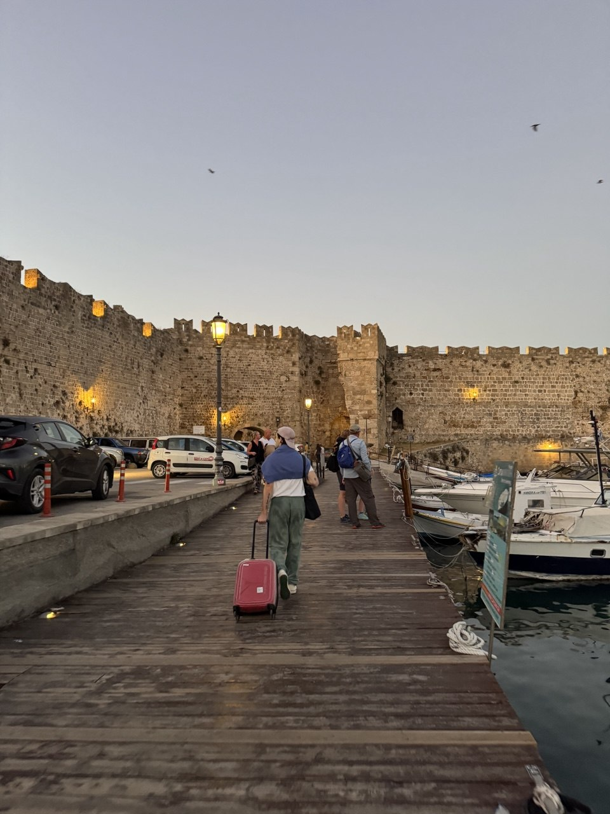
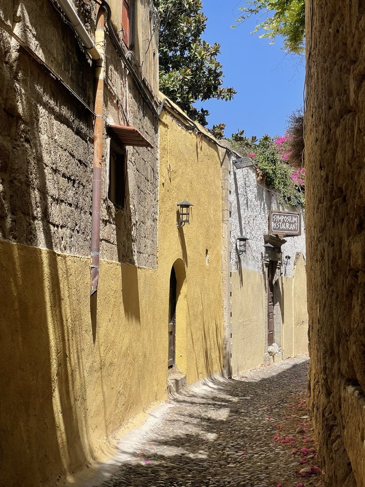
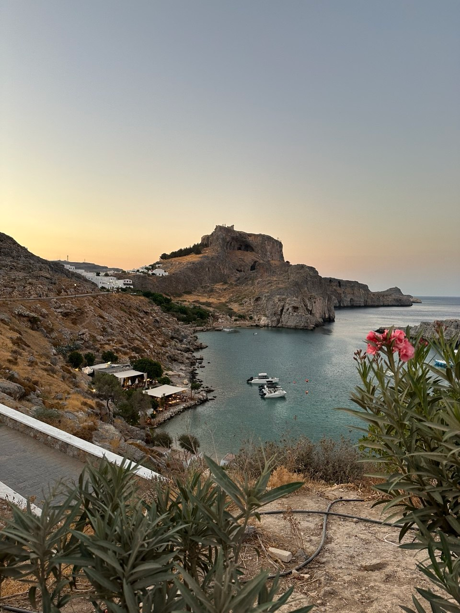
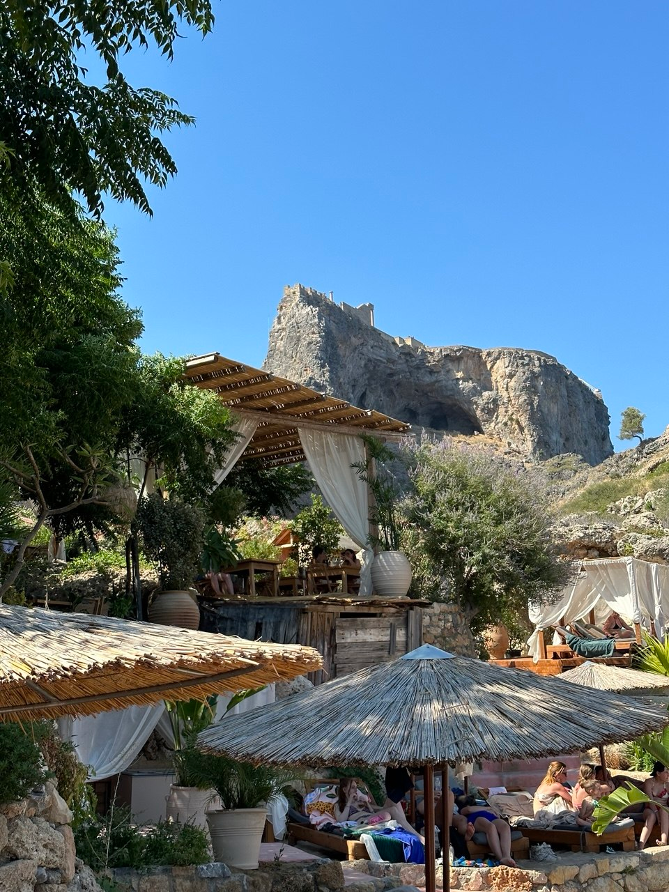
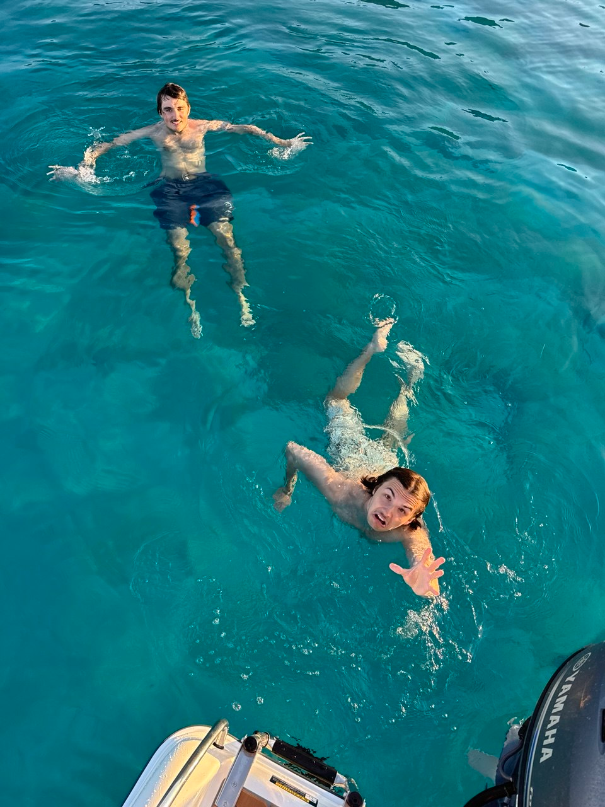

Столица острова делится на новый и старый город. В новом — интересная набережная со стороны Средиземного моря, магазины (H&M, Zara и магазин с Carhartt и всякими модными штуками). Старый город — там есть марина, где когда-то стоял Колосс Родосский, а сам город представляет из себя крепость.
В Средние века остров был базой для крестоносцев, которые плыли на Святую землю, — поэтому здесь много крепостей, и старый город сам по себе самая большая из них. После крестоносцев приплыли венецианцы — их архитектуру тоже можно встретить.
Старый город кишит котами, сувенирными лавками и тавернами. И именно в его порт вы приплывёте на пароме, если летели через Мармарис. На острове живёт много англичан — не удивляйтесь всевозможным пабам и людям в футбольных джерси с плохими зубами и бледной кожей.
Вот несколько мест, где можно перекусить:


Остров небольшой — от одной части до другой — 2-2.5 часа на машине. Главное можно охватить за несколько дней, если не сидеть на пляже всё время (хотя это тоже отличный план)
Бывшие термы, а по факту — просто живописный и красивый пляж. Рядом — Долина бабочек: тенистое ущелье, куда в сезон слетаются тысячи бабочек-медведиц.
Живописное место с родниками, красивой церковью и очень большим количеством павлинов. Есть туннель, который, говорят, очищает грехи. Проверяли — работает.
Мужской монастырь высоко на горе — выглядит впечатляюще. Рядом — отличный пляж. Местных на острове вообще называют «цамбики» — что-то вроде «деревенщина».
Во Вторую мировую остров был под итальянской оккупацией. Муссолини построил здесь виллу. Заброшенная вилла высоко в горах, рядом — немецкий отель и городок, где держали больных солдат. Очень крутое место, совсем другая сторона острова.
Место, где встречаются Эгейское и Средиземное море. Очень ветрено — излюбленное место кайт- и виндсёрферов. По пути — таверна в Плимири с отличной рыбой.
Там очень горячо ходить босиком по асфальту. Можно намочить носки и ходить в них — работает.
На западной стороне острова места более дикие. Лимни бич — суровое Средиземное море и семейная таверна Хризама рядом. Лучшие закаты на острове.
Тихое место, где можно искупаться и поплавать на каяках. Если повезёт, выйдет олень на водопой.
Большие археологические раскопки древнегреческой деревни. Для тех, кому мало акрополя в Линдосе.
Жемчужина острова. Красивейшее место с гордым акрополем на скале, одно из древнейших поселений. Здесь нужно провести хотя бы целый день — а лучше два.


Мы живём на пересечении деревень Асклипио, Кьотари и Геннади. Довольно отдалённое от основного туристического потока место — и это большая часть его прелести.
Туристическая деревня с отелями и галечным пляжем. В El Greco делают достойный гирос. Ресторан Vaya — лучший на острове: держат братья-близнецы, наши хорошие друзья. Скажите, что от нас — будут только улыбаться. Ещё есть отличная Capi Di Pizza — держит полячка Аннет.
Очень живописная деревня, где живут настоящие местные. Красивая церковь, и на площади перед ней вся деревня собирается на праздники.
Неплохая улица с ресторанами. По дороге сюда — таверна Ангелаки с мясом из печи.
